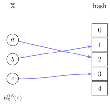
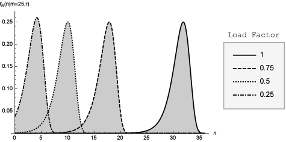

proof \AtEndEnvironmentproof \AtBeginEnvironmentexample \AtEndEnvironmentexample
Rate-distorted cryptographic perfect hash functions
A theoretical analysis on space efficiency, time complexity, and entropy
Abstract
We analyze a theoretical perfect hash function that has three desirable properties: (1) it is a cryptographic hash function; (2) its in-place encoding obtains the theoretical lower-bound for the expected space complexity; and (3) its in-place encoding is a random bit string with maximum entropy.
Keywords: perfect hash function, random oracle, space complexity, maximum entropy, cryptographic hash function
1 Prior Art
Perfect hash functions have been extensively studied in the literature. Early foundational work by Dietzfelbinger et al. [4] established theoretical bounds for space-efficient hash tables with worst-case constant access time. Czech, Havas, and Majewski [3] introduced a family of perfect hashing methods that became widely influential.
More recent practical algorithms have focused on minimal perfect hash functions (MPHFs), which achieve a load factor of exactly 1. Botelho, Pagh, and Ziviani [2] presented simple and space-efficient constructions, while Belazzougui, Botelho, and Dietzfelbinger [1] developed the Compress, Hash, and Displace (CHD) algorithm, which achieves excellent space-time tradeoffs for large datasets.
Our work differs by focusing on the theoretical properties of cryptographic perfect hash functions with maximum entropy encodings, rather than minimal space or construction speed.
2 Perfect hash functions
A set is an unordered collection of distinct elements. If we know the elements in a set, we may denote the set by these elements, e.g., denotes a set whose membes are exactly , , and .
A finite set has a finite number of elements. For example, is a finite set with three elements. When sets and are isomorphic, denoted by , they can be put into a one-to-one correspondence (bijection), e.g., . Since there exists at least one bijection between isomorphic sets, we can losslessly convert one to the other and thus, isomorphic sets are in some sense equivalent.
The cardinality of a finite set is the number of elements in the set, denoted by , e.g., . A countably infinite set is isomorphic to the set of natural numbers .
Given two elements and , an ordered pair of then is denoted by , where if and only if and . Ordered pairs are non-commutative and non-associative, i.e., if and .
Related to the ordered pair is the Cartesian product.
Definition 2.1.
The set is the Cartesian product of sets and .
By the non-commutative and non-associative property of ordered pairs, the Cartesian product is non-commutative and non-associative. However, they are isomorphic, i.e., .
A tuple is a generalization of order pairs which can consist of an arbitrary number of elements, e.g., .
Definition 2.2 (-fold Cartesian product).
The -ary Cartesian product of sets , is given by .
Note that , thus we may implicitly convert between them without ambiguity.
If each set in the -ary Cartesian product is the same, the power notation may be used, e.g., . As special cases, the -ary (nullary) Cartesian product is defined to be , and the -ary (unary) Cartesian product is the identity, e.g., .
The hash function is given by the following definition.
Definition 2.3.
Hash functions of type are just total functions, normally with a finite codomain, with the weak assumption that they will be used as a device to assign elements from a value from without requiring any particular rule.
For a given bit string and hash function , is denoted the hash of .
We are particularly interested in perfect hash functions as given by the following definition.
Definition 2.4 (Perfect hash function).
A perfect hash function over the set , denoted by
| (1) |
is an injective function when restricted to .111There are no collisions among elements of , for all , .
Assumption 1.
Perfect hash functions are surjective.
The load factor is given by the following definition.
Definition 2.5.
The proportion of hashes mapped to by over subset is denoted the load factor. Specifically, the load factor of is a rational number given by
| (2) |
Notation.
A perfect hash function of type over with a load factor may be denoted by . If and we are interested in drawing attention to the cardinality of the perfect hash function, we may also denote it by .
Example 1 Consider the set . A perfect hash function of type over with a load factor is denoted by or . Given the load factor and , we may deduce the codomain of to be precisely . See Figure 1 for an illustration.
Definition 2.6.
A minimal perfect hash has a load factor .

Every hash function in is a perfect hash function over some subset of , e.g., every hash function is trivially a perfect hash function of and singleton sets.
Assuming and are finite, the set of hash functions of type , which may also be denoted by , has a cardinality
| (3) |
The set of perfect hash functions over is a subset of with the predicate that no collisions may occur on any pair of elements in . The set of perfect hash functions over has a cardinality
| (4) |
3 A theoretical cryptographic perfect hash function
The bit set is denoted by . The set of all bit strings of length is therefore . The cardinality of is . In the case of , we denote by . The set of all bit strings of length or less is denoted by with a cardinality , e.g., . The countably infinite set of all bit strings, , is denoted by . A tuple is denoted a bit string, and we typically drop the angle brackets when specifying stings, e.g., .
An important operation that is closed over the free semigroup of is concatentation, , which is defined as with special cases .
Most hash functions are of the type where is some finite natural number.
Another useful function is the binary padding function is defined as with the special case .
The binary truncation function is defined as , with the special case .
The bit length function is defined as , e.g., if then .
Since , they may put into one-to-one correspondence. A convenient one-to-one correspondence between them is given by the following definition.
Definition 3.1.
The sets and have a bijection given by
| (5) |
We denote the mapping described by Definition 3.1 with the postfix function and , which are inverse functions, i.e., . An important observation of this mapping is that a natural number maps to a bit string of length .
More generally, if we have some set , in a physical computer there must be a way to map the elements of to bit strings that repesent the values. We provide this mapping with encoder and decoder functions denoted respectively by and such that and .
A special case of the encoder and decoder is given by letting any bit string represent either the sequence of bits or as the binary coded decimal (BCD), e.g., . Thus, any operation on non-negative integers may be applied to bit strings without ambiguity, e.g., .
Given a function of , the domain of may be denoted by and the codomain may be denoted by .
A random oracle as given by the following definition.
Definition 3.2.
A random oracle in the family is a theoretical hash function whose output is uniformly distributed over its codomain.
The theoretical analysis of the perfect hash function makes the following assumption.
Assumption 2.
The hash function is a random oracle.
Definition 3.3.
The data type for the cryptographic perfect hash function under consideration is defined as with a value constructor defined as
| (6) |
where
| (7) |
Since is a data type that purports to model perfect hash functions, its computational basis is given by the following set of functions.
By the assumption of surjectivity (and the perfect hash function is not rated-distorted), then the load factor is given by where , i.e., the maximum hash (natural ordering of integers) of .
Definition 3.4.
The minimum and maximum hash of a value of type (that models a perfect hash function) are given respectively by and where
| (8) |
The most important function, the perfect hash mapping, , is defined as
| (9) |
where
| (10) |
Theorem 3.1.
A value of type constructed with models where and .
Proof.
Proof here. ∎
Suppose we have a function such that is injective, e.g., an encoder for values of . The composition where is a perfect hash function of type over . Thus, the rest of the material in this paper does not usually assume any particular domain of the perfect hash function since injections may always be constructed for any set.
3.1 Analysis
Note that since denotes the geometric code for and we choose the smallest that succeeds, where each choice of is a geometrically distributed trial with probability , the expected space complexity obtains the information-theoretic lower-bound of bits per element.
We search all possible hash functions which are a function of , an approximate random oracle, and choose the perfect hash function on a specified set that has the smallest bit length. We describe the algorithm for performing this exhaustive search in Algorithm 1.
We consider a family of perfect hash functions for a set which are given by the output of a hash function that approximates a random oracle applied to the input concatenated with a bit string . We describe the generative algorithm for the perfect hash function in Algorithm 1. Note that in Algorithm 1, the concatenation of two bit strings and is denoted by .
The perfect hash function generated by Algorithm 1 has the statistical property that the output is uniformly distributed as given by the following theorem.
Theorem 3.2.
The perfect hash function , where , is a random oracle over and the restriction is a random -permutation oracle of .
Proof.
First, in Algorithm 1 on Line 5, is a bit string such that each concatenated with hashes to a unique integer in by the hash function , thus the hash function found perfectly hashes the elements of .
Second, by Definition 3.2, approximates a random oracle whose output is uniformly distributed over the elements of . Viewing the elements of as integers, where , is uniformly distributed over .
If for some integer , the remainder of the output of when dividing by , given by the modulo operator, and adding is uniformly distributed over since each has an equal number of hashes assigned to it by . If and for some integer , then it is approximately uniformly distributed and converges to the uniform distribution as . ∎
The probability that no collisions occur for a particular bit string in Algorithm 1 is given by the following theorem.
Theorem 3.3.
The probability that a bit string results in a perfect hash function is given by
| (11) |
where is the cardinality of the set being perfectly hashed, is the load factor, and .
Proof.
Suppose we have a set of cardinality . The set of perfect hash functions restricted to where has a cardinality given by since any choice of out of elements in the codomain and any ordering of the elements in to the chosen elements in satisfy the definition of perfect hashing.
The set of hash functions restricted to has a cardinality of . Therefore, the ratio of perfect hash functions restricted to to the total hash functions restricted to is just
| (12) |
By the property of the hash function being a random oracle, the algorithm randomly samples one of the hash functions, which is a perfect hash function with probabilty .
∎
Equation (11) may be reparameterized with respect to the load factor. By (2), . Solving this equation with respect to yields the solution
| (13) |
and thus plugging in this value of yields the result
| (14) |
The expected in-place coding size is given by the following theorem.
Theorem 3.4.
The expected coding size is given approximately by
| (15) |
Proof.
| (16) |
| (17) |
The space required for the perfect hash function found by Algorithm 1 is of the order of the length of the bit string in the returned tuple. Therefore, for space efficiency, the algorithm exhaustively searches for a bit string in the order of increasing size .
We are interested in the first case when no collision occurs, which is a geometric distribution with probability of success as given by the discrete random variable
| (18) |
where is given by (14. The expected number of trials for the geometric distribution is given by
| (19) |
By Definition 3.1, the -th trial uniquely maps to a bit string of length . Thus, the expected bit length is given approximately by
| (20) | ||||
| (21) |
By Stirling’s approximation,
| (22) |
and so the expectation may be rewritten approximately as
| (23) |
Since we are interested in the expected bits per element, we divide the expectation by and after further simplification arrive at
| (24) |
After further simplification, we arrive at
| (25) |
∎
The entropy of is given by
| (26) |
| (27) |
Note that Algorithm 1 has an exponential time complexity with respect to the cardinality of the input set . As a result, Algorithm 1 is not a practical algorithm for any reasonably large . However, it is intended to illustrate theoretical properties useful to data structures that implement oblivious sets and maps[4, 3] based on the perfect hash function. Simple and efficient algorithms exist [1, 2].
The theoretical lower-bound of a minimal perfect hash function is given by the following postulate.
Postulate 3.1.
The theoretical lower-bound for minimal perfect hash functions has an expected coding size given approximately by
| (28) |
Theorem 3.5.
The cryptographic perfect hash generator given by Algorithm 1 results in a minimal perfect hash function that obtains the theoretical lower-bound of by invoking make_perfect_hash(, ).
Proof.
This is as expected, since Algorithm 1 finds the smallest perfect hash function that is a function of a random oracle for any load factor in which the distribution of the sets are uniformly distributed. The following corollary follows as a result.
Corollary 3.5.1.
The lower-bound for perfect hash functions with a load factor is given by (15.
As goes to , the expected bits per element goes to . t Note that the probability mass function of the random bit string found for is known exactly. Thus, if the desire is to serialize the perfect hash function for transmission or storage, shorter bit strings may be assigned to more probable bit strings. This representation is not usable in-place, i.e., the serialization must be decoded, but it can reduce transmission or storage cost.
4 A practical two-level perfect hash function
4.1 Analysis
Suppose we have a set of elements with some total order for which we seek a perfect hash function .
We denote the serialization of some value by . If is already understood to be a serialization, then denotes deserialization instead.
By the assumption that the hash function is a random oracle restricted to the codomain , the -th attempt (trial) to find a non-colliding hash for has a probability of success since we have already found hashes for the previous elements and therefore there are only hashes remaining.
This is an example of the Coupon collector’s problem. Let denote the uncertain number of trials needed to find a non-colliding hash for . The total number of trials needed is an uncertain random variable given by
| (30) |
By the linearity of the expectation operator,
| (31) |
which asymptotically converges to or on average trials per element of .
If we use the minimum number of bits
The variance of is given by
| (32) |
5 Algebra of function composition
Perfect hash functions can be composed with other functions to create new perfect hash functions with different properties. This algebraic structure provides flexibility in designing hash function families.
5.1 Composition preserves injectivity
While a perfect hash function is not globally injective, its restriction to is injective:
| (33) |
This restriction property enables composition with injective functions while preserving the perfect hash property.
Theorem 5.1 (Post-composition with injection).
Let be an injective function, be a perfect hash function, and for . The composition is a perfect hash function where .
Proof.
From the load factor definition, , so . Since is injective, is injective on , making it a perfect hash function with load factor
| (34) |
∎
5.2 Permutation equivalence classes
Given a perfect hash function , composing with any permutation yields another perfect hash function over with the same load factor. Since there are permutations of , a single perfect hash function generates a family of related perfect hash functions.
These functions form an equivalence class where all members have identical collision structure outside of . This equivalence class can be denoted where ranges over all permutations of .
Corollary 5.1.1.
For a perfect hash function with codomain , the ratio of permutation-equivalent perfect hash functions to all possible functions is
| (35) |
Appendix A Probability mass of random bit length
The bit length of the perfect hash function found by Algorithm 1 has an uncertain value with respect to (random) sets and therefore we may model it as a random variable as given by the following definition.
Definition A.1.
The perfect hash function generated by Algorithm 1 has a random bit length given by
| (36) |
where is the cardinality of the random set and is the load factor.
Note that if the distribution of sets is not uniformly distributed as given by sample_bit_length, then better algorithms than Algorithm 1 are possible, i.e., the lower-bounds are with respect to uniformly distributed random sets and smaller lower-bounds are possible if the random sets are non-uniformly distributed.
The probability mass of the random bit length is given by the following theorem.
Theorem A.1.
The random bit length has a probability mass function given by
| (37) |
where is the cardinality of the random set, is the load factor, and ,
Proof.
Each iteration of the loop in Algorithm 1 has a collision test which is Bernoulli distributed with a probability of success , where success denotes no collision occurred. We are interested in the random length of the bit string when this outcome occurs.
For the random variable to realize a value , every bit string smaller than length must fail and a bit string of length must succeed. There are bit strings smaller than length and each one fails with probability , and so by the product rule the probability that they all fail is given by
| (38) |
Given that every bit string smaller than length fails, what is the probability that every bit string of length fails? There are bit strings of length , each of which fails with probability as before and thus by the product rule the probability that they all fail is , whose complement, the probability that not all bit strings of length fail, is given by
| (39) |
By the product rule, the probability that every bit string smaller than length fails and a bit string of length succeeds is given by the product of (38) and (39),
| (40) |
For (40 to be a probability mass function, two conditions must be met. First, its range must be a subset of . Second, the summation over its domain must be .
The first case is trivially shown by the observation that is a positive number between and and therefore any non-negative power of is positive number between and .
The second case is shown by calculating the infinite series
| (41) | ||||
| (42) |
Explicitly evaluating this series for the first terms reveals a telescoping sum given by
| (43) |
where everything cancels except . ∎
In Figure 2, we plot the probability mass function of conditioned on and several different load factors. We see that the probability mass is peaked and unimodal and tends to nearly zero everywhere except over a concentrated interval around its expected value.
random bit length

The expected size was already computed, but the probability mass function contains everything there is to know about the distribution of , not just the expected value. However, for illustration, we show how the expected value may be computed.
Theorem A.2.
The expected bit length of conditioned on random sets of cardinality and a load factor is given by
| (44) |
where .
Proof.
The expectation of is given by
| (45) | |||
| (46) |
Explicitly evaluating this series for the first terms reveals a converging sum given by
| (47) | |||
| (48) |
∎
References
- [1] (2009) Compress, hash, and displace algorithm. ACM Journal of Experimental Algorithmics (JEA) 14, pp. 1–26. Cited by: §1, §3.1.
- [2] (2007) Simple and space-efficient minimal perfect hash functions. In International Workshop on Algorithms and Data Structures, pp. 139–150. Cited by: §1, §3.1.
- [3] (1992) A family of perfect hashing methods. The Computer Journal 35 (6), pp. 547–554. Cited by: §1, §3.1.
- [4] (1990) Space-efficient hash tables with worst-case constant access time. In STACS 90: 7th Annual Symposium on Theoretical Aspects of Computer Science Rouen, France, February 22–24, 1990 Proceedings 7, pp. 271–282. Cited by: §1, §3.1.